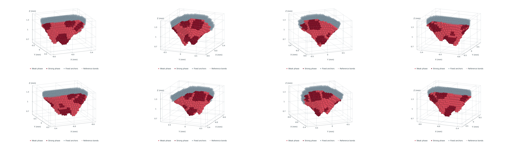

相机环绕固定初态，非断裂时程。1927 血块点、1561 固定锚点；深浅红色对应真实强弱相。V4内部点云不规则、控制体积非均匀；固定外边界和锚点，按新参考坐标重建材料图并排除穿越空隙的连接。所有本体和界面键淡线呈现；固定支架内部键仅在图中省略。球形标记体积等于Vi，仅表示离散求积。
4K MP4 · 1080p PPT版 · 静态封面

Δx=50 µm；δ=150.5 µm；PD积分体积0.240875 mm³。本视频仅环绕新计算的原生初态，不是断裂时间演化；实际3.6ms计算见上级结果索引。